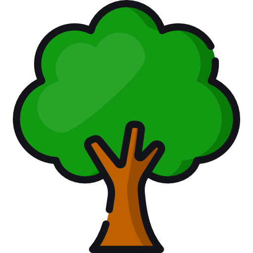

Forests
Forests provide habitats, store carbon and support millions of species.

SUSTAINABLE DEVELOPMENT GOAL 15
Protecting forests, wildlife, biodiversity and ecosystems is essential for life on Earth.
WHY IT MATTERS
Forests, mountains, soil, rivers and wildlife are all connected. Damage to one part of an ecosystem can affect everything around it.

Forests provide habitats, store carbon and support millions of species.
Biodiversity keeps ecosystems balanced and helps nature remain resilient.
Healthy land provides food, clean water, resources and other essential services.
THE PROBLEM
Forests are cleared for agriculture, development and other human activities.
When natural habitats disappear, animals and plants lose the places they depend on.
Pollution can damage soil, water and ecosystems.
Changing temperatures and weather patterns can put additional pressure on ecosystems.
Expanding factories, infrastructure and urban growth put increasing strain on natural land and resources.
Overusing natural resources such as timber, water and wildlife faster than they can replenish threatens long-term ecosystem health.
THE BIGGER PICTURE
of Earth's land surface is covered by forest (UN FAO, 2025)
hectares of forest lost globally since you opened this page
species currently at risk of extinction (IUCN Red List)
MOVIE CONNECTION
Pixar's The Good Dinosaur follows Arlo, a young Apatosaurus who becomes separated from his family and finds himself travelling through an unfamiliar wilderness.
Along the journey, Arlo encounters forests, rivers, mountains and wildlife. The natural environment becomes an important part of his survival and growth.
Share Your OpinionHAVE YOUR SAY
Take our short survey and help us understand people's awareness of environmental issues.
Take the SurveySURVEY RESULTS
Total Responses
View Deforestation as Serious
Have Heard of SDG 15
TAKE ACTION
You don't have to make a huge contribution to start supporting the environment.
See What You Can Do